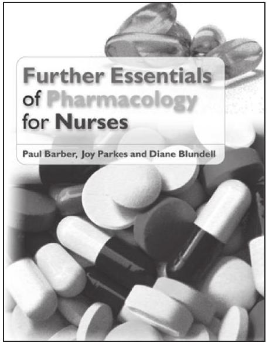
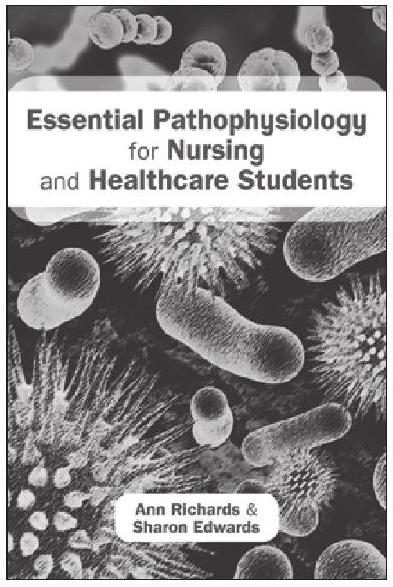
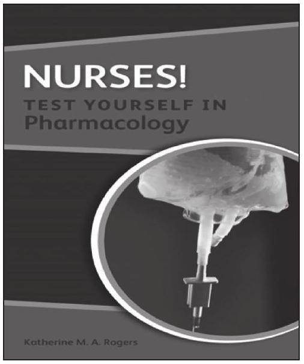
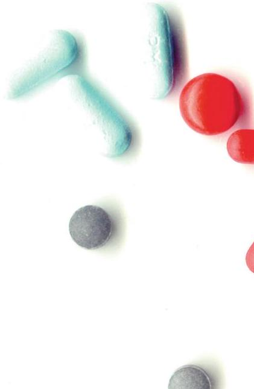

Conclusion and Appendices
Conclusion
In order to become safe in the administration of medicines and become competent in the education of patients with regard to their medication, the nurse must have knowledge of basic pharmacology and physiology. Also, in the interests of patient safety, they must be able to complete simple drug calculations. This book has introduced you to the knowledge necessary when engaging in these skills.
The focus of your career is nursing and it is important that any science subject is applied to that discipline. The clinical tips have been designed to give you an insight into the importance of understanding pharmacology and to be relevant to the process of nursing. We hope that the first two chapters managed to set the scene in terms of introducing topics and concepts that enabled you to understand Chapters 4 to 9 in more depth.
Chapter 3 should have enabled you to consolidate your understanding of drug calculations. This chapter is more of a reminder, and is not meant to be an exhaustive appraisal of different calculating regimens, but refers you to other text to help with this, and instead focuses on the basic numerical skills required for safe calculation.
Chapters 4 to 11 should have given you a feel for the fascinating world of pharmacology and also demonstrated to you how important this concept is to nursing. The links to physiology should have been helpful in terms of your understanding. We hope that the breadth and depth of the discussion has left you wanting to read further and there are many books out there which can give you more detail and cover a wider range of medicines.
Chapter 12 should have given you an insight into the patient's role and responsibility with regard to their medicine management. Nurses generally are well placed to help patients understand the need to adhere to instruction and advice. Often the nurse is the agent of continuity in the patient's journey, therefore we hope you have gained some insight into the importance of your role as a health educator.
Several studies during the past few years have suggested that nurses were not very accurate in drug calculations. This resulted in changes taking place at a pre-registration education level. Most universities now test the competence of their students in drug calculations by either formal or informal methods. We hope that the questions at the end of most chapters were realistic and helped you to practise your mathematics in relation to drug dosages.
The whole area of giving a medicine is fraught with potential pitfalls. That is why we hope you enjoyed Chapter 13. Calculating the correct dose is obviously important, but there remain other areas of law and professional standards which need upholding if you are to become a safe practitioner.
Overall we hope this book has given you the motivation and interest to want to increase your knowledge in this important area of nursing. There are many texts that you can refer to as you become more knowledgeable and inquisitive (see our suggestions for further reading). We hope that our book has been one of the first stepping stones in your chosen career as a nurse.
Glossary
A
absorption: process by which a drug reaches the general circulation and becomes biologically available.
acetylcholine: chemical transmitter released by certain nerve endings.
adrenaline: hormone produced by adrenal medulla to prepare the body for fight or flight.
angiotensin: a hormone involved in the reninangiotensin system which is a target for blood pressure lowering medication.
antidote: a remedy which counteracts the action of a chemical.
anti-emetic: a drug given to stop nausea and vomiting.
aperient: a drug given to help loosen the bowels.
arachidonic acid: substance liberated from the cell enabling the cyclo-oxygenase pathway.
B
b-lymphycyte: a type of white cell associated with the immune response and production of antibodies.
basophil: a granular white cell which contains heparin and histamine.
bioavailability: the extent and rate of a drug that becomes available to its target receptor following administration.
blood-brain barrier (BBB): the membranes between the circulating blood and the brain.
bradykinin: powerful pain-producing substance.
bronchoconstriction - the narrowing of the bronchial passages in the lungs.
C
chemotaxis: the movement of white cells towards an area of inflammation.
collagen: an essential protein that helps make up many tissues in the body.
complement proteins: a group of proteins which are essential in aiding the inflammatory response.
contraindications: reasons, usually medical, whereby medications should not be given to a patient.
cyclo-oxygenase pathway: a metabolic pathway which results in the formation of prostoglandins.
cytochrome P450: a group of enzymes which help metabolize drugs.
D
decongestant: a drug used to unblock the upper respiratory tract.
distribution: the distribution of drugs after absorption, to reach their target sites.
dopamine: neurotransmitter implicated in movement.
E
elimination: removal of drugs and their metabolites from the body.
enteric coating: protective coating which ensures a medicine is released after leaving the stomach.
extrinsic pathway: blood clotting mechanism which is initiated by external damage to vessel.
F
first pass: effect caused by metabolism of a drug by the liver resulting in only part of the drug reaching the circulation.
G
gamma-aminobutyric acid (GABA): neurotransmitter associated with a dampening effect on brain activity.
glucocorticoid: hormones secreted by the adrenal cortex.
H
half-life: time taken for a drug to lose 50 per cent of its plasma concentration in the body.
histamine: substance which causes widespread vasodilation and increased permeability of blood vessels.
I
ingestion: taking into the body.
intramuscular (IM): injection into a muscle.
intravenous (IV): injection directly into a vein.
intrinsic pathway: blood clotting mechanism initiated without any external damage needed to vessel.
L
laxative: drug given to promote defecation.
lipid: a naturally occurring molecule which stores energy. Examples are fats and cholesterol.
M
mycobacteria: rod-shaped acid fast bacteria implicated in tuberculosis.
N
neuroleptics: antipsychotic drugs.
P
phantom limb pain: the sensation of pain that is still reported from a patient after the removal of a limb/body part.
plasma protein: proteins carried in the plasma with a range of physiological functions. Target sites for drug binding.
plasminogen: inactive plasma protein.
potassium: major intracellular cation.
prostacyclin: prostaglandin implicated in making platelets less sticky.
proteolytic enzymes: enzymes which break down proteins within the cell membrane.
prothrombin: inactive plasma protein involved in blood clotting.
proton pump inhibitor (PPI): drug which stops production of hydrochloric acid in the stomach.
R
renin: a hormone secreted by the kidney to help raise blood pressure.
S
salicylates: group of drugs including aspirin which are acidic and given as analgesics.
septicaemia: overwhelming infection of the blood.
serotonin: neurotransmitter implicated in alterations of mood.
steady state: this is the point reached when the amount of drug being absorbed is the same as the amount being excreted.
subcutaneous (SC): injection given into tissue just beneath the skin.
systemic vasodilation: widening of the blood vessels throughout the body, including arteries and veins usually by smooth muscle relaxation. Often leads to a reduction in blood pressure.
T
therapeutic range: the range of plasma drug concentration in which medicine has its best effect.
therapeutic index: this is the comparison of the amount of a drug needed to bring about a therapeutic response to the amount that would cause a toxic effect.
thromboxane: implicated in making platelets more sticky.
topically: the application of a drug directly to skin and mucous membranes.
Answers
Chapter 1
1 A, 2 A, 3 D, 4 C, 5 B, 6 B, 7 D, 8 B, 9 D, 10 A
Chapter 2
1 B, 2 C, 3 B, 4 D, 5 A, 6 C, 7 C, 8 D, 9 B, 10 A
Chapter 3
Calculations: 1: 2000 mcg, 2: 0.6 g, 3: 1200 mg, 4: 5000 mcg, 5: 2 tablets, 6: 2 tablets, 7: 12.5 ml, 8: 15 ml, 9: 10 minutes, 10: 750 mg
Chapter 4
Calculations: 1: 1.5 ml, 2: 50 ml, 3: 3 tablets (20 mg + 20 mg + 10 mg), 4: 2.6 ml, 5: 0.8 ml, 6: 1.5 ml, 7: 8 tablets, 8: 0.4 ml, 9: 0.7 ml, 10: 0.75 ml
Multiple choice questions: 1 A, 2 D, 3 B, 4 D, 5 C, 6 B, 7 A, 8 C, 9 D, 10 C
Chapter 5
Calculations: 1: 16 ml, 2: 1.7 ml, 3: 40 ml, 4: 2 tablets, 5: 4.5 ml, 6: 56 tablets, 7: 10 ml, 8: 2 ml, 9: 7.5 ml, 10: 20 ml
Multiple choice questions: 1 C, 2 A, 3 C, 4 B, 5 D, 6 D, 7 A, 8 C, 9 C, 10 D
Chapter 6
Calculations: 1: 6 tablets, 2: 5 tablets, 3: The nearest accurate dose would be 3.4 ml, 4: 3 ml, 5: The nearest accurate dose would be 4.3 ml, 6: 2 tablets, 7: 600 mg in each dose, 8: The nearest accurate dose is 0.75 ml, 9: 3.2 ml, 10: 0.5 ml
Multiple choice questions: 1 D, 2 A, 3 C, 4 A, 5 B, 6 C, 7 D, 8 C, 9 B, 10 A
Chapter 7
Calculations: 1: 5 ml, 2: 4 tablets, 3: 0.525 ml, 4: 0.9 ml, 5: 3 tablets (5 mg + 1 mg + 1 mg = 7 mg or 1 mg + 3 mg + 3 mg = 7 mg), 6: 5 ml per hour, 7: 0.1 ml, 8: 500 units / 40 ml = 20,000 units. 20,000 units / 5000 units = 4 ml. 4 ml of heparin and 36 ml of saline = 40 ml of solution, 9: 0.9 ml, 10: a) 0.25 ml ; b) 0.25 ml ; c) 0.5 ml
Multiple choice questions: 1 C, 2 A, 3 A, 4 D, 5 C, 6 B, 7 A, 8 C, 9 C, 10 D
Chapter 10 (for Chapters 8, 9, 10)
Calculations: 1: 2 ml, 2: 8 ml, 3: 3 tablets, 4: 2 ml, 5: 1.25 ml, 6: 0.5 ml, 7: 2 ml, 8: 12.5 ml, 9: 0.28 ml, 10: 45 ml
Multiple choice questions: 1 B, 2 D, 3 A, 4 C, 5 C, 6 B, 7 D, 8 B, 9 A, 10 C
Chapter 11
Calculations: 1: 2 tablets, 2: 3 tablets, 3: 4 tablets, 4: 2.5 tablets, 5: 0.4 ml, 6: 0.25 ml, 7: 2.5 ml, 8: 1 ml, 9: 4 ml, 10: 2.5 ml
Multiple choice questions: 1 D, 2 C, 3 D, 4 A, 5 D, 6 B, 7 A, 8 C, 9 B, 10 C
Chapter 12
Calculations: 1: 2 tablets, 2: 2,500 g, 3: 0.12 ml, 4: 1,250,000 mcg, 5: 2.5 ml, 6: 2.5 ml, 7: 200 ml per hour, 8: 100,000 mg, 9: 25 g, 10: 300 g
Multiple choice questions: 1 A, 2 C, 3 B, 4 D, 5 B, 6 A, 7 D, 8 C, 9 D, 10 B
Chapter 13
Multiple choice questions: 1 B, 2 A, 3 D, 4 A, 5 C, 6 C, 7 D, 8 A, 9 D, 10 B
Index
abacavir, 77, 88-9
abiximab, 123
absent seizures, 161
absorption, medication
age related adverse reactions, 20-21, 22
case study of, 10-11
significance, characteristics and process, 4-6, 11, 16
acetylcholine antagonists, 160-61
aciclovir, 77-9, 89
... and so on for the rest of the index terms.
From the Publisher
MEDICINE MANAGEMENT FOR NURSES Case Book
Paul Barber (Ed)
9780335245758 (Paperback)
August 2013
eBook also available

Further Essentials of Pharmacology for Nurses
Barber, Parkes and Blundell
ISBN: 9780335243976 (Paperback)
eBook: 9780335243983
2012

Essential Pathophysiology for Nursing and Healthcare Students
Richards and Edwards
ISBN: 9780335238323 (Paperback)
eBook: 9780335238347
2014

NURSES! TEST YOURSELF IN PHARMACOLOGY
Katherine Rogers
9780335244911 (Paperback)
August 2012
eBook also available
